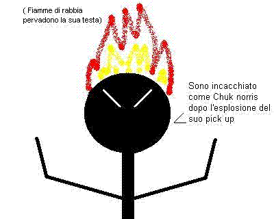

DETTAGLIO DELL'ARTICOLO RABBIA
UN GUASTATORE INVIATO DALLA NOSTRA DITTA A CUI MOSTRERETE I VOSTRI AVERI PI� CARI DAL PUNTO DI VISTA SENTIMENTALE, IL GUASTATORE PROVVEDER� IMMEDIATAMENTE A DISTRUGGERLI E SPARGERNE LE CENERI AL VENTO FACENDO COS� SCATENARE LA VOSTRA RABBIA REPRESSA E NIENTE POP� DI MENO CHE BLABLABLABLABLABLABLABLABLABLABLABLABLABLABLABLABLABLABLABLABLABLABLABLA
